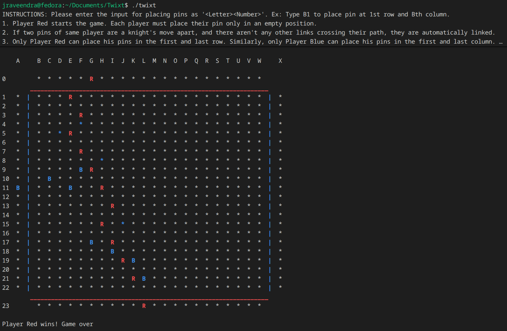
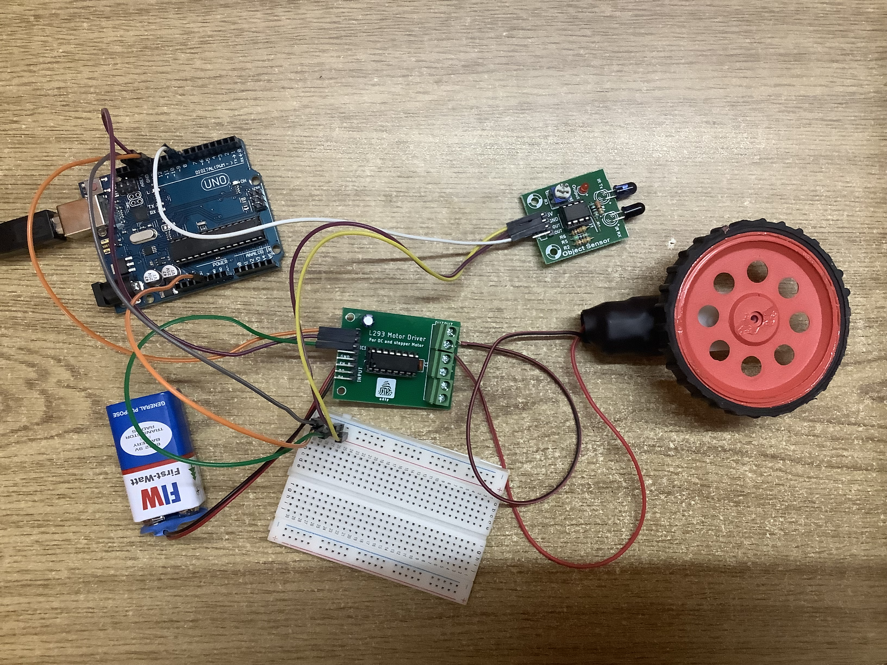
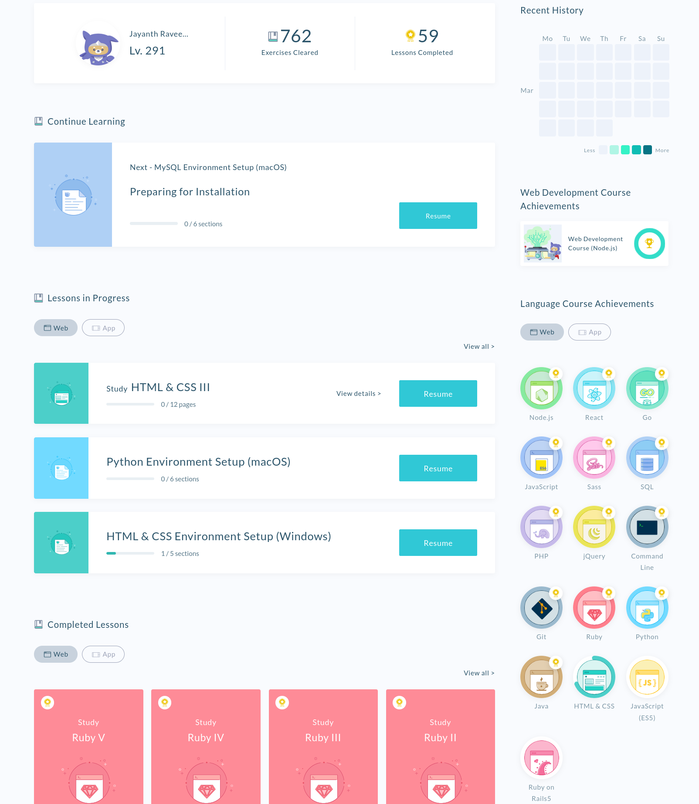

Projects
Project 1: Twixt!

This a CLI implemention of the game 'Twixt!' using only C.
It is a two player implemention (No CPU's), where each player
enters the cooordinates where they want to place their pin.
The program detects incorrect placements and prompts the player
to enter different coordinates. After each pin placement, there are
checks to see if the pin can be connected to neighbouring friendly pins.
Additionally, a DFS is run to check if any player has won yet. As soon
as the DFS gets a hit, the game automatically stops and declares the
concerned player the winner.
Repo link
Project 2: Arduino

I coded up multiple small Arduino experiments. They were coded up using a code-block based Arduino software. I experimented with water pumps, IR motion sensors, DC motors and input key presses from the computer. Finally, I made a small car that would change direction immediately based on arrow keys pressed on a computer. It was a three-legged car with a free-axis front wheel and two back-wheels powered by DC motors. Based on the direction key pressed, the back two DC motors would spin in opposite directions to create the necessary turn.
Project 3: Coding on Progate

I learnt the basics of many different languages in high school like HTML, CSS, Javascript,
Git, Node.js, React, Go, SQL, Python, Java, Command Line, jQuery, PHP, Sass and Ruby. The
courses were well-structured, where they would teach concepts and then test you on them with
interactive coding questions. This really helped me get familiar with web development. I also gained
some experience with Python and Git. This has really helped me adjust to the programming courses
offered here in college. Ironically enough, I never finished the HTML & CSS course :).
Progate.com